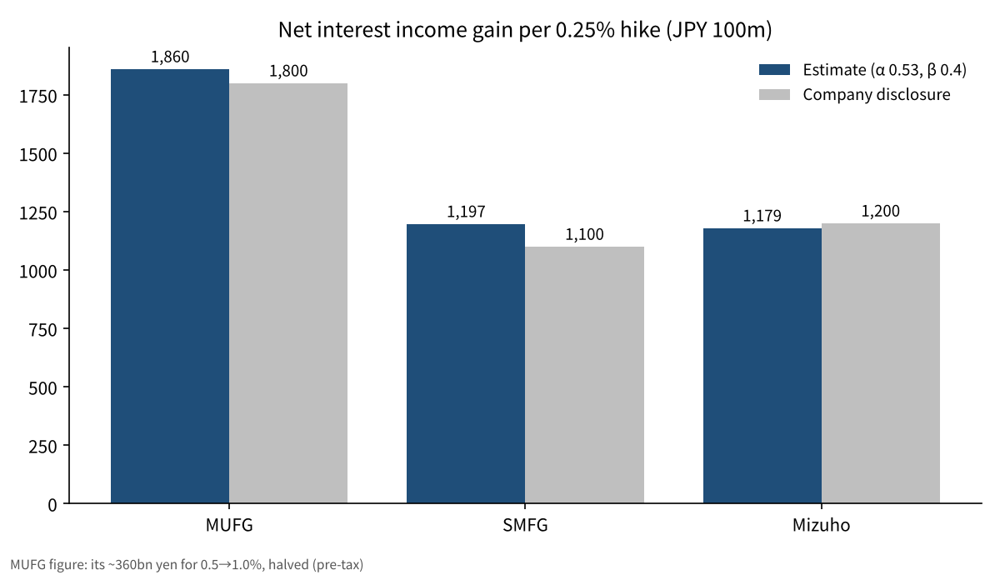
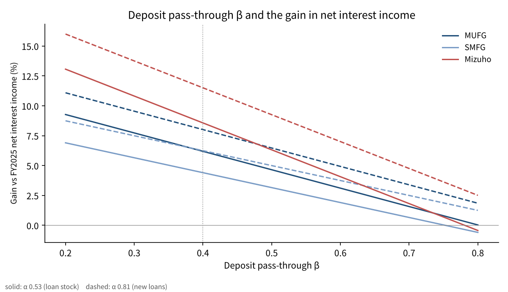

How much would one 0.25% Bank of Japan rate hike lift the megabanks' interest income?
On October 30, 2026, the Bank of Japan (BOJ) held its policy rate at around 1.25%. One of the 9 Policy Board members proposed a hike to 1.5%, and the proposal was voted down.
Markets are moving on the assumption that the next 0.25% hike will come at some point. So I narrow this piece down to a single question.
If the policy rate rises by 0.25%, by what percentage does net interest income grow at each of Japan's three megabanks: MUFG (Mitsubishi UFJ), SMFG (Sumitomo Mitsui) and Mizuho?

The question and the background
Net interest income is the interest a bank receives on loans and securities, minus the interest it pays on deposits and other funding. It is the core of a bank's earnings from its main business. When the policy rate rises, both the interest received and the interest paid go up, but at different speeds. That difference in speed is why rate hikes lift bank profits.
The BOJ ended its negative interest rate policy in March 2024, then raised rates to 0.25% in July 2024, 0.5% in January 2025, 0.75% in December 2025, 1.0% in June 2026 and 1.25% in September 2026[1]. The October 30 meeting kept rates on hold by a vote of 8 to 1[1].
Two of the three megabanks disclose the effect of a single 0.25% hike. SMFG says net interest income rises by about ¥110 billion in the first year and about ¥150 billion in year 5[2], and Mizuho says its net interest income rises by about ¥120 billion a year[3]. For fiscal 2025, net profit was ¥2.4272 trillion at MUFG, ¥1.5830 trillion at SMFG and ¥1.2486 trillion at Mizuho[2][3][5]. MUFG does not give a figure per 0.25%; instead it shows an impact of about ¥360 billion on pre-tax profit as the policy rate rises from 0.5% to 1.0%[4].
I define one technical term used here. The deposit pass-through rate (β) is the ratio of how much deposit rates rise when the policy rate rises by 1. The smaller β is, the larger the bank's share. In the same way, the lending pass-through rate (α) is the ratio of how much lending rates rise when the policy rate rises by 1. The larger α is, the faster the interest a bank receives grows.
The interest the BOJ pays on current account balances also plays an important part in this calculation. This is the rate paid on money that banks hold at the BOJ, and it is currently set at 1.25%, the same as the policy rate[1]. Money that a bank collects as deposits but cannot lend out earns the same interest as the policy rate simply by sitting at the BOJ. The larger a bank's surplus funds, the sooner it tends to benefit from a hike.

Data and method
I use each bank's disclosed net interest income for fiscal 2025 (the year ended March 2026) and its domestic deposit and loan balances[2][3][5]. MUFG has domestic deposits of ¥185.2 trillion and domestic loans of ¥78.1 trillion, Sumitomo Mitsui Banking Corporation has domestic deposits of ¥135.9 trillion and domestic loans of ¥71.6 trillion, and Mizuho has domestic yen deposits of ¥123.9 trillion and domestic loans of ¥57.8 trillion.
I approximate the increase in net interest income from one hike as the sum of the following 3 parts.
(1) Loans: loan balance × 0.25% × lending pass-through rate (α)
(2) Surplus deposits: the amount left after subtracting loans from deposits is assumed to sit in the BOJ current account, and its yield rises by the same amount as the policy rate (the interest on reserves is at the same level as the policy rate)
(3) Deposits: subtract deposit balance × 0.25% × deposit pass-through rate (β)
I set the base values of α and β from actual rate movements. The megabanks' ordinary deposit rates have risen by 0.10% for each 0.25% rise in the policy rate (January and December 2025, June and September 2026)[6]. I take 0.4 as the base for β. On the lending side, BOJ statistics show that the average contracted interest rate on loans (stock) at domestic banks rose by 0.72% from the end of negative rates to August 2026[7]. Dividing this by the 1.35% rise in the policy rate over the same period gives 0.53, which I use as the base for α. For new loans alone, the rate rose by 1.10% over the same period, from 0.683% to 1.782%[7], a ratio of 0.81. Existing loans are replaced over time, starting with fixed-rate ones, so the stock rate rises more slowly than the rate on new loans.
I also look at the deposit side. The average ordinary deposit rate at banks nationwide went from 0.001% in February 2024 to 0.331% in October 2026[7]. 1-year time deposits (under ¥3 million) rose from 0.005% to 0.486%[7].
Applied to SMFG's disclosed assumptions (yen loans of about ¥70 trillion and deposits of about ¥130 trillion), this formula gives about ¥112.8 billion. That is close to the roughly ¥110 billion first-year figure the company shows, so I concluded that the shape of the formula is not far off.
Results
The estimates under the base case (α = 0.53, β = 0.4) are as follows. The growth rates in the table show the effect in year 1 after a hike.
| Bank | Domestic deposits | Domestic loans | Increase in net interest income (estimate) | Net interest income, FY2025 | Growth rate | Company disclosure |
|---|---|---|---|---|---|---|
| MUFG | ¥185.2 trillion | ¥78.1 trillion | about ¥186.0 billion | ¥3,006.2 billion | 6.2% | about ¥360 billion for 0.5→1.0% (pre-tax) |
| SMFG | ¥135.9 trillion | ¥71.6 trillion | about ¥119.7 billion | ¥2,719.6 billion | 4.4% | about ¥110 billion in year 1 |
| Mizuho | ¥123.9 trillion | ¥57.8 trillion | about ¥117.9 billion | ¥1,377.0 billion | 8.6% | about ¥120 billion a year |
The answer to the question, in the base case, is that net interest income grows by roughly 4–9%. MUFG's figure of about ¥186.0 billion is also close to about ¥180 billion, which is the bank's disclosed ¥360 billion for a 0.5% move divided by 2 hikes.
The growth rates differ because the gap between deposits and loans differs. At MUFG, more than ¥100 trillion of domestic deposits is not lent out, and that amount enlarges the effect of a hike. Mizuho's net interest income is small relative to its deposits to begin with, so the same 0.25% produces a higher growth ratio. SMFG has a high share of loans, so its gain from surplus deposits is relatively small. In return, SMFG discloses that the effect grows to about ¥150 billion by year 5[2]. This is because fixed-rate loans are gradually replaced by loans at higher rates.
Assuming a 30% tax rate and converting to after-tax figures, the increase comes to about ¥130.2 billion at MUFG, about ¥83.8 billion at SMFG and about ¥82.5 billion at Mizuho. Against fiscal 2025 net profit, these are about 5.4%, 5.3% and 6.6% respectively. By this calculation, one hike adds roughly 5–7% to net profit.

Sensitivity analysis
The results change a great deal depending on how β and α are set. I varied β across 0.3, 0.4, 0.5 and 0.7, and α between 0.53 and 0.81 (the pass-through rate for new loans)[7].
| Case | MUFG | SMFG | Mizuho |
|---|---|---|---|
| α0.53, β0.3 | 7.7% | 5.7% | 10.8% |
| α0.53, β0.4 (base) | 6.2% | 4.4% | 8.6% |
| α0.53, β0.5 | 4.6% | 3.2% | 6.3% |
| α0.53, β0.7 | 1.6% | 0.7% | 1.8% |
| α0.81, β0.4 | 8.0% | 6.2% | 11.5% |
| α0.81, β0.7 | 3.4% | 2.5% | 4.8% |
When β rises from 0.4 to 0.7, the growth rate falls to less than half at all three banks. Conversely, if lending rates rise as fast as those on new loans, the growth rate gains about 2–3 percentage points. Of the 8 cases, the lowest was 0.7% and the highest was 13.8%.
In past hikes, the deposit pass-through rate has moved at around 0.4. However, the average ordinary deposit rate at banks nationwide has risen by just 0.33% against a 1.35% rise in the policy rate, a ratio of about 24%[7]. For time deposits it is about 36%. The speed of pass-through varies quite a lot with the mix of deposits. The more ordinary deposits a bank has, the lower its β, and the higher the share of time deposits, the higher β becomes.
There is a range on the α side as well. The BOJ's Financial System Report finds that major banks, which have a higher share of loans linked to market rates, see larger rises in the rates on their existing loans[8]. The megabanks may sit above the base α of 0.53, compared with smaller banks.

Discussion
There is an opposing view. When rates rise, depositors move money from ordinary deposits into time deposits and investment trusts (mutual funds). In that case, the interest a bank pays rises faster than the formula assumes, and β ends up above 0.4. A private-sector study also assumes that for a 0.25% rise in the policy rate, ordinary deposit rates rise by 0.1% and floating-rate mortgages by 0.25%[9]. Mizuho's management has also explained that, because of the cost of time deposits, it expects the effect to fall a little short of ¥120 billion a year[3].
The other concern is that deposits themselves could flow out. From November 2, 2026, the megabanks' ordinary deposit rate rises to 0.5%. This was reported to be the highest level since August 1992[6]. If money moves to other financial institutions with higher rates, or to Japanese government bonds, the deposit balances the formula assumes will shrink.
This estimate also has limits. First, I assumed that all surplus deposits sit in the BOJ current account, but in reality they are also allocated to government bonds and overseas assets. Second, the scope of domestic deposit and loan balances differs from company to company, so they cannot be compared strictly. Third, I have not included the risk that higher lending rates lead to more borrower bankruptcies. Fourth, I have not included overseas interest rates or currency movements. All three banks have large overseas loan books, and their overall profits are affected by those as well.
The benchmark for checking the answer will be the three banks' interim results, due in mid-November 2026. Seeing how much they raise their full-year net interest income forecasts after the September hike to 1.25% should bring me closer to the actual levels of β and α.
Conclusion
My estimate is that one 0.25% BOJ hike raises the megabanks' net interest income by roughly 4–9% in the base case. In yen terms, that is about ¥120–190 billion per bank.
However, this figure depends heavily on how fast deposit rates follow. If β rises to 0.7, the growth rate falls to around 1–2%. Whether rate hikes become a tailwind for banks depends less on the level of rates and more on where depositors move their money.
How I see it
I hold shares in four banks: MUFG, Resona, Sumitomo Mitsui Trust and SMFG. I bought them when the long-term rate (the 10-year JGB yield) was around 0.75% to 1%, and I will consider my read correct if the long-term rate goes above 2%. I thought an October hike was possible, but the result was a hold.
My condition for selling is when I judge that rates have entered a falling phase; as long as rates are not falling, I hold. So even with this hold, I am not changing how I hold the four banks. With bank stocks, I watch the BOJ's decisions and the long-term rate, not the earnings reports.
Sources
- Bank of Japan, "Statement on Monetary Policy", Oct 30, 2026 https://www.boj.or.jp/mopo/mpmdeci/mpr_2026/k261030a.pdf
- Sumitomo Mitsui Financial Group, "FY2025 Results Investor Presentation", May 18, 2026, p.9 https://www.smfg.co.jp/investor/financial/latest_statement/2026_3/2026_fy_setumei.pdf
- Mizuho Financial Group, "FY2025 Financial Results Company Presentation", May 19, 2026, p.27 and p.36 https://www.mizuho-fg.co.jp/investors/financial/briefing/pdf/20260519_1.pdf
- Mitsubishi UFJ Financial Group, "MUFG's Strengths", Jan 2026, p.26 https://www.mufg.jp/dam/ir/investors/seminar/pdf/slides260121_ja.pdf
- Mitsubishi UFJ Financial Group, "FY2025 Financial Highlights", May 15, 2026 https://www.mufg.jp/dam/ir/fs/2025/pdf/highlights2603_ja.pdf
- Mizuho Bank, "Revision of Yen Ordinary Deposit Interest Rates", Sep 18, 2026 https://www.mizuhobank.co.jp/release/pdf/20260918_2release_jp.pdf
- Bank of Japan, Time-Series Data Search (deposit and lending rates), updated Oct 19, 2026 https://www.stat-search.boj.or.jp/
- Bank of Japan, "Financial System Report", Apr 2026 https://www.boj.or.jp/research/brp/fsr/data/fsr260421a.pdf
- Mizuho Research & Technologies, research report, Jun 8, 2026 https://www.mizuhobank.co.jp/corporate/mhri/research/report/2026-0057/index.html
Photos: Kate Branch, Mohamed Jamil Latrach (Unsplash). Charts by YUKI CAPITAL
I record my daily numbers and decisions on X.